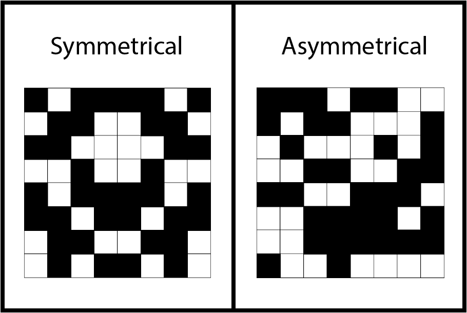

<html>
  <head>
    <title>WM symmetry span task</title>
    <script src="jspsych-6.0.4/jspsych.js"></script>
    <script src="jspsych-6.0.4/plugins/jspsych-html-keyboard-response.js"></script>
    <script src="jspsych-6.0.4/plugins/jspsych-symmetry-judgement-task.js"></script>
    <script src="jspsych-6.0.4/plugins/jspsych-survey-text.js"></script>
    <script src="jspsych-6.0.4/plugins/jspsych-instructions.js"></script>
    <script src="jspsych-6.0.4/plugins/jspsych-fullscreen.js"></script>
    <script src="jspsych-6.0.4/plugins/jspsych-spatial-span.js"></script>
    <script src="jspsych-6.0.4/plugins/jspsych-spatial-span-recall.js"></script>
    <script src="https://cdn.jsdelivr.net/npm/jstat@latest/dist/jstat.min.js"></script>
    <script src="https://ajax.googleapis.com/ajax/libs/jquery/1.11.1/jquery.min.js"></script>
    <script src="/assets/javascripts/jatos.js"></script>
    <link href="jspsych-6.0.4/css/jspsych_grid.css" rel="stylesheet" type="text/css"></link>
  </head>
  <body></body>
  <script>
  /*
      This is a web-based symmetry span working memory test.
      It is modelled after the operation span test described in Oswald et al (2014) [https://link.springer.com/article/10.3758/s13428-014-0543-2].
      However, users can easily customize this test for their own purposes.
      Easily customizable variables have been listed below. For further changes to the test, knowledge of JavaScipt may be required.

      For smooth functioning of the test, make sure all the associated github files within the repository have been downloaded (especially the folder named 'jspsych-6.0.4').
      Results from this test will be automatically downloaded into the downloads folder of your desktop.

      For further details, please refer to the README.
  */

  //----- CUSTOMIZABLE VARIABLES -----------------------------------------

    minSetSize = 3 // starting length of each trial (i.e., min number of letters in a trial)
    maxSetSize = 10 // ending length of each trial (i.e., max number of letters in a trial)
    repSet = 2 // number of times each set size should be repeated
    randomize = false // present different set sizes in random order. if false, set sizes will be presented in ascending order
    file_name = null // file name for data file. if null, a default name consisting of the participant ID and a unique number is chosen.
    local = false // save the data file locally.
                // If this test is being run online (e.g., on MTurk), true will cause the file to be downloaded to the participant's computer.
                // If this test is on a server, and you wish to save the data file to that server, change this to false.
                // If changed to false, ensure that the php file (its in the folder!) and the "data" folder has also been appropriately uploaded to the server.
                // Incase of problems, feel free to contact me :)

  //----------------------------------------------------------------------
//var username = jatos.studySessionData.username;
	var online = true;
    
  var setSizes = []    // different set sizes
  for (var i = minSetSize; i<= maxSetSize; i++){
    for (var r = 1; r<= repSet; r++){
      setSizes.push(i)
    }
  }

  var grid = 4;
  var matrix = [];
  for (var i=0; i<grid; i++){
    m1 = i;
    for (var h=0; h<grid; h++){
      m2 = h;
      matrix.push([m1,m2])
    }
  };

  var nTrials = setSizes.length
  if (randomize){
    setSizes = jsPsych.randomization.sampleWithoutReplacement(setSizes, nTrials)} // shuffle through the set sizes

  var squaregridDemoArray = [3]
  var fullDemoArray = [3]
  var nPracticeTrials = squaregridDemoArray.length //number of practice trials for square memorization
  var nfullDemo = fullDemoArray.length

  var setSizes = squaregridDemoArray.concat(fullDemoArray, setSizes)
  var totalTrials = setSizes.length //total number of trials in the entire task
  var n = 0 //keeps track of number of trials gone by

  var selection = jsPsych.randomization.sampleWithoutReplacement(matrix, setSizes[n])
  var selection_id = -1  //keeps track of recall items within a test stack
  var nError = 0;

  var nSymmetryAcc = 0 //feedback
  var nSquaresRecalled = 0 //feedback
if(online){
var instructions = {
    type: 'instructions',
    pages: function(){
      pageOne = '<div style="font-size:20px;"><b>INSTRUCTIONS</b><br><br><br>This is the symmetry span task. <br><br>This task has two parts: <br>(1) Square memorization <br>(2) Symmetry judgement<br><br><br></div>'
      pageTwo = '<div style="font-size:20px;">We will first practice SQUARE MEMORIZATION.<br><br>You will see a grid of squares on the screen.<br>Several squares will turn red one at a time.<br>Try to remember which squares turned red and the order in which they turned red.<br><br>Below is an example of the grid with one square colored red. <br><br> </img></div>'
      pageThree = '<div style="font-size:20px;">After this, you will be shown an empty grid.<br>You must use the mouse to select the squares that turned red in their correct presentation order. <br>If you make a mistake use the provided "Backspace" button to clear your last response.<br><br>Press "Next" for practice trials.<br><br></div>'
      return [pageOne, pageTwo, pageThree]
      
    },
    allow_backward: false,
  	data: { subject: jatos.studySessionData.username},
    button_label_next: "Next",
    show_clickable_nav: true
  }
  } else{
  var instructions = {
    type: 'instructions',
    pages: function(){
      pageOne = '<div style="font-size:20px;"><b>INSTRUCTIONS</b><br><br><br>This is the symmetry span task. <br><br>This task has two parts: <br>(1) Square memorization <br>(2) Symmetry judgement<br><br><br></div>'
      pageTwo = '<div style="font-size:20px;">We will first practice SQUARE MEMORIZATION.<br><br>You will see a grid of squares on the screen.<br>Several squares will turn red one at a time.<br>Try to remember which squares turned red and the order in which they turned red.<br><br>Below is an example of the grid with one square colored red. <br><br> </img></div>'
      pageThree = '<div style="font-size:20px;">After this, you will be shown an empty grid.<br>You must use the mouse to select the squares that turned red in their correct presentation order. <br>If you make a mistake use the provided "Backspace" button to clear your last response.<br><br>Press "Next" for practice trials.<br><br></div>'
      return [pageOne, pageTwo, pageThree]
    },
    allow_backward: false,
    button_label_next: "Next",
    show_clickable_nav: true
  }
  }

  var instructions2 = {
    type: 'instructions',
    pages: function(){
      pageOne = '<div style="font-size:20px;">We will now practice SYMMETRY JUDGEMENTS.<br><br>A black and white picture will appear on the screen and you have to judge if the picture is symmetrical or asymetrical.<br>A picture is symmetrical if its left half is identical to the right half when flipped.<br>Below are examples of symmetrical and asymetrical pictures:<br> </img><br><br>Press "Next" to start practicing symmetry judgements.</div>'
      return [pageOne]
    },
    allow_backward: false,
    button_label_next: "Next",
    show_clickable_nav: true
  }

  var instructions3 = {
    type: 'instructions',
    pages: function(){
      pageOne = '<div style="font-size:20px;">We will now practice the two tasks together.<br><br>In the next practice set, you will first be presented with a red colored square.<br>Try and remember the position of that colored square.<br>After the colored square dissapears, you will be asked to make a symmetry judgement of a black and white picture.<br><br>Try making the symmetry judgement as soon as possible.<br>Each symmetry judgement picture will be presented for only 6 seconds.<br><br></div>'
      pageTwo = '<div style="font-size:20px;">After the symmetry judgement, you will be shown another colored square to remember,<br>which will be followed by another symmetry judgement.<br><br>Therefore, colored square presentations and symmetry judgements will alternate.<br>After 3 to 6 squares have been presented, the recall grid will appear.<br>Use the mouse to select the presented squares in their correct order.<br><br>Press "Next" to start practice rounds.<br><br></div>'
      return [pageOne, pageTwo]
    },
    allow_backward: false,
    button_label_next: "Next",
    show_clickable_nav: true
  }

  var instructions4 = {
    type: 'instructions',
    pages: function(){
      pageOne = '<div style="font-size:20px;">You have finished with the practice trials.' +
        "<br><br><b>You are now ready to begin the experiment.<br><br> "+
          'Press "Next" to begin.<br><br></div>'
      nError= 0
      return [pageOne]
    },
    allow_backward: false,
    button_label_next: "Next",
    show_clickable_nav: true
  }


  var nProportionDemo = 0
  var cog_load_demo = {
    type: 'symmetry-judgement-task',
    size: 8,
    trial_duration: null,
    number_darkened: [17, 18, 19],
    stimulus: "Is this image symmetric?",
    proportion: function(){
      nProportionDemo += 1
      if (nProportionDemo == 1){
        return 1
      } else if (nProportionDemo == 2 ){
        return 0
      } else {
        return 0.5
      }
    }
  }

var cog_load = {
  type: 'symmetry-judgement-task',
  size: 8,
  trial_duration:6000,
  number_darkened: [17, 18, 19],
  stimulus: "Is this image symmetric?",
  on_finish: function(){
    var acc = jsPsych.data.get().last(1).values()[0].accuracy;
    if (acc==1){
      nSymmetryAcc+=1
    }
  }
}

var test_stimuli = {
  type: 'spatial-span',
  grid_size: function(){
    return grid
  },
  trial_duration:1000,
  selected_box: function(){
    selection_id+=1
    return selection[selection_id]
  }
}

var end_test_stimuli = {
  type: 'spatial-span',
  grid_size: function(){
    return grid
  },
  trial_duration: 0,
  selected_box: function(){
    return selection[selection_id]
  },
  display_red_box: false,
  on_finish: function(){
     if (selection_id+1>=selection.length){
         jsPsych.endCurrentTimeline()
       }
     }
 }

var recall = {
  type: 'spatial-span-recall',
  grid_size: function(){
    return grid },
  correct_order: function(){
    return selection },
  data: function(){
    return {set_size: setSizes[n], subject: jatos.studySessionData.username, task: jatos.studySessionData.task_ID}  },
  on_finish: function(){
    nSquares = setSizes[n]
    nSquaresRecalled = jsPsych.data.get().last(1).values()[0].accuracy;
    n+=1
    selection = jsPsych.randomization.sampleWithoutReplacement(matrix, setSizes[n])
    selection_id = -1
     if (nSquaresRecalled==nSquares){
      nError = 0
    } else if (nError < 3 ) { // checks for number of consecutive errors
      nError += 1
    } else if (nError >= 3 ) { // checks for number of consecutive errors
      jsPsych.endCurrentTimeline()
    }
  }
}

var feedback = {
    type: 'instructions',
    pages: function(){
      pageOne = "<div style='font-size:20px;'><b>You recalled <font color='blue'>"+nSquaresRecalled+" out of "+nSquares+"</font> squares in their correct order.</b><br><br>"
      if (n>nPracticeTrials){
        pageOne+= "You made <font color='blue'>"+nSymmetryAcc+" out of "+nSquares+"</font> accurate symmetry judgement(s).<br><br></div>"
      }
      return [pageOne]
    },
    allow_backward: false,
    button_label_next: "Next Trial",
    show_clickable_nav: true,
    on_finish: function(){
      nSymmetryAcc = 0
    }
  }

  var feedbackSymm = {
    type: 'html-keyboard-response',
    stimulus: function(){
      var text = ""
      var accuracy = jsPsych.data.get().last(1).values()[0].accuracy
      if (accuracy==1){
        text += '<div style="font-size:35px; color:rgb(0 220 0)"><b>Correct</div>'
      } else{
        text += '<div style="font-size:35px; color:rgb(240 0 0)"><b>Incorrect</div>'
      }
      //text += '<div style="font-size:30px; color:rgb(0 0 0)"><br><br>New trial starting now.</div>'
      return text
    },
    choices: jsPsych.NO_KEYS,
    trial_duration: 1000
  }

  var conclusion = {
    type: 'html-keyboard-response',
    stimulus: function(){
      return '<div style="font-size:20px;">This task is over.<br><br>' +
        "This part of the experiment is now finished.</div>" +
        "Press any key to move to the next task." },
    //choices: jsPsych.NO_KEYS
  }

//   var p_details = {
//     type:"survey-text",
//     questions: [{prompt: "Enter subject number"}],
//     on_finish:function(){
//       partN = jsPsych.data.get().last(1).values()[0].partNum
//       partN = partN.replace(/['"]+/g,'')
// //      console.log(partN[0])
//     }
var p_details = {
    type:"html-keyboard-response",
    choices: [" "],
    stimulus: "Press space bar to begin",
	data: { subject: jatos.studySessionData.username }
  }


  var test_stack = {
    timeline: [test_stimuli, cog_load, end_test_stimuli],
    repetitions: 10,
     on_start: function() {
   		if (nError >= 3){
      		jsPsych.endCurrentTimeline()
      	}
      }
  }

  var test_procedure = {
    timeline: [test_stack, recall, feedback],
    repetitions: nTrials,
    on_start: function() {
   		if (nError >= 3){
      		jsPsych.endCurrentTimeline()
      	}
      }
  }

  var squaresDemoStack = {
    timeline: [test_stimuli, end_test_stimuli],
    repetitions: 10
  }

  var squaresDemo = {
    timeline: [squaresDemoStack, recall, feedback],
    repetitions: nPracticeTrials
  }

  var symmetryDemo = {
    timeline: [cog_load_demo, feedbackSymm],
    repetitions: 5
  }

  var fullDemo = {
    timeline: [test_stack, recall, feedback],
    repetitions: nfullDemo
  }

  timeline = [p_details]
  timeline.push({
    type: 'fullscreen',
    fullscreen_mode: true
  });
timeline = timeline.concat([instructions, squaresDemo, instructions2, symmetryDemo, instructions3, fullDemo, instructions4, test_procedure])
timeline.push({
  type: 'fullscreen',
  fullscreen_mode: false
});
//timeline.push(dataLog)
timeline.push(conclusion)

jatos.onLoad(function() {
  var Task = jatos.studySessionData.currentTask+1
  var taskOrder = jatos.studySessionData.taskOrder
  var currentStudy = jatos.studySessionData.study
  var nextComponent = taskOrder[Task]
  var task_ID = jatos.studySessionData.task_ID

  	jsPsych.init({
 		timeline: timeline,
  		on_finish: function() {
        jatos.studySessionData["currentTask"] = Task;
	      jatos.studySessionData["taskOrder"] = taskOrder;
	      jatos.studySessionData["username"] = jatos.studySessionData.username;
        jatos.studySessionData["study"] = currentStudy;

     var resultJson = jsPsych.data.get().csv();
       jatos.submitResultData(resultJson, jatos.startComponentByPos(nextComponent));
  	}
	});
});
</script>
</html>
